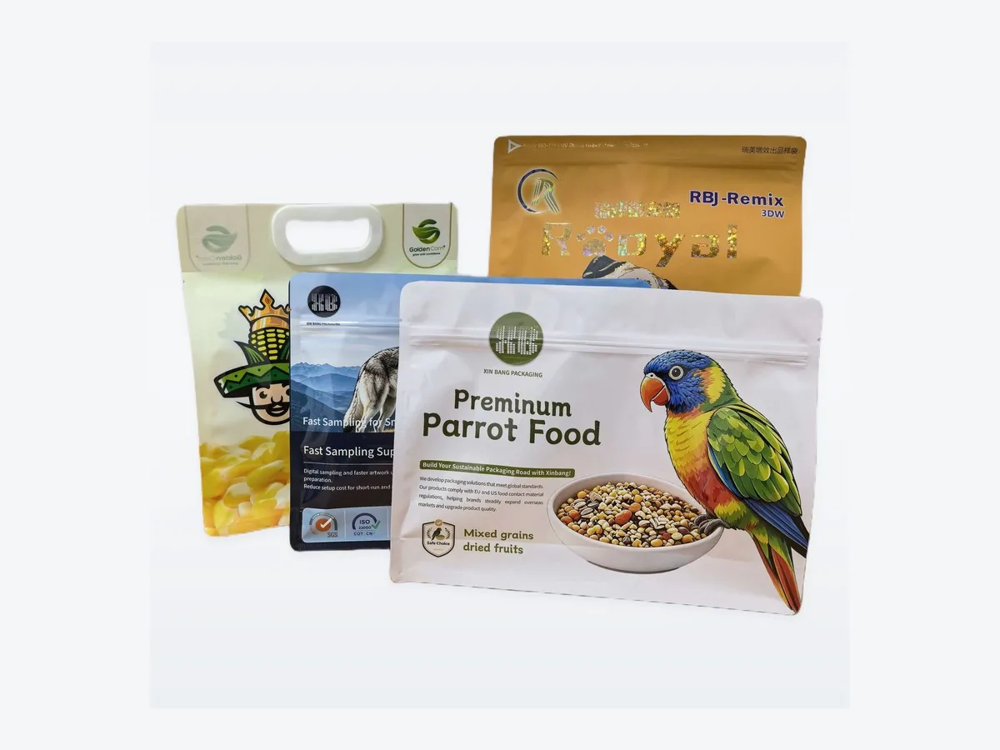

An eight-side seal bag — also sold as a flat bottom pouch or box pouch — stands on a folded paper-style base instead of a simple gusset. That base is what gives it a wide, flat front panel and the block shape buyers associate with premium retail shelves.

Sample shown for format reference only; any branding on the sample belongs to its respective owner. Production uses your own artwork and specifications.
Base depth, panel size and closure are set to your fill weight and shelf requirement. Specifications are confirmed before production.
The name describes the seal pattern rather than a single bag: the side seams, the bottom folds and the corner seals together form a rectangular block that keeps its shape when filled. Compared with a stand-up pouch, the flat bottom format gives a larger uninterrupted front panel for artwork, a squarer footprint on the shelf, and better stacking because the base is flat rather than curved.
The base is the part that decides performance. A deeper base carries more fill weight and stands more firmly but uses more film and takes more shelf depth. A shallower base suits smaller retail packs. Panel width follows from the fill volume, so we size the bag from your pack weight and target dimensions rather than from a catalogue list, and confirm the dieline before printing.
Closures change the filling line. A press-to-close zipper is the low-cost option for products opened a few times; a slider zipper suits heavy repeated opening, larger formats and frozen products. For roasted coffee a one-way valve belongs in the front or back panel so gas can leave without air coming in, and the valve position has to be set before the print file is finalised.
The format is also the natural home for premium coffee, dry pet food, tea and specialty snacks, because the flat panel carries a brand story and the block shape reads as a considered product rather than a commodity bag.
Structures are chosen against barrier needs, shelf life, filling method and the destination market.
Indicative ranges for planning. Final thickness, size and structure are confirmed per order.
| Formats | Flat bottom pouch, box pouch, eight-side seal bag with zipper, valve or window |
|---|---|
| Typical Structures | PET/PE, PET/VMPET/PE, PET/AL/PE, MOPP/PE, kraft/PE, mono-material options |
| Thickness | Structure-dependent, commonly 90–170 µm total; confirmed per product |
| Available Sizes | From small retail packs to multi-kilogram food service formats; sizes customized |
| Functional Accessories | Zipper, slider, valve, window, tear notch, handle, hang hole, laser score |
| Printing | Digital printing for short runs and multiple designs; gravure for repeat volumes |
| Applications | Coffee, tea, pet food, snacks, nuts, powders, dry goods |
| Customization | Base depth, panel size, structure, closure, print and finish |
Digital printing suits launches, seasonal designs and several SKUs in one order, because there is no cylinder cost per colour. Gravure printing is the cheaper route once the design is fixed and the volume repeats, and it holds a consistent colour across runs. Either way the base folds and seal pattern are set before the print file is finalised.
The practical minimum is driven by the printing method. Digital printing makes short trial runs and multiple designs workable, so a new brand can test a shelf design before committing to volume. Gravure printing is set up around repeat volume. Send the pack weight, base depth, closure, artwork count and annual volume and we will confirm the minimum for your specification.
The points buyers usually check before a first order.
In trade use, yes. Eight-side seal, flat bottom pouch and box pouch all describe a bag with a folded rectangular base and sealed corners that stands as a block. The exact fold pattern can vary between suppliers, so the dieline is confirmed per order.
A wider flat front panel, a squarer footprint and better stacking. The trade-off is more film per pack and a deeper shelf footprint, so flat bottom formats usually suit premium retail rather than the cheapest possible pack.
Yes. The valve is fitted into the front or back panel so roasted coffee can degas without air entering. The valve position has to be fixed before the print file is finalised, because it interrupts the artwork.
Press-to-close for packs opened a few times and for the lower cost, slider where the pack is opened repeatedly, used in larger formats or stored frozen. The zipper also affects the fill opening, so it is set together with your filling equipment.
Yes. We produce to your artwork and specifications, confirm the dieline and print file before production, and provide a sample or proof for approval where the project calls for it.
The most widely used flexible retail format, with zipper, window and valve options.
Flat bottom and stand-up coffee packs with valve and zipper.
Structures for kibble, treats and wet pet food.
Short runs and multiple designs without cylinder cost.
Send your pack weight, base depth, closure type and quantity — we will recommend a structure and quotation.